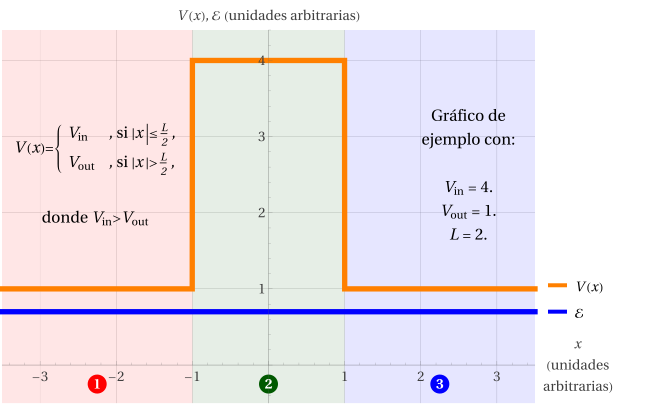

Caso (c): \(V_\text{in}>V_\text{out}>\mathcal{E}\)

Al igual como ocurrió con el pozo de potencial, este caso solo conduce a que \(\psi(x)=0\). Es decir, la partícula no puede existir en un estado cuya energía esté por debajo del mínimo absoluto del potencial. Debido a aquello, solo estudiaremos los casos (a) y (b).